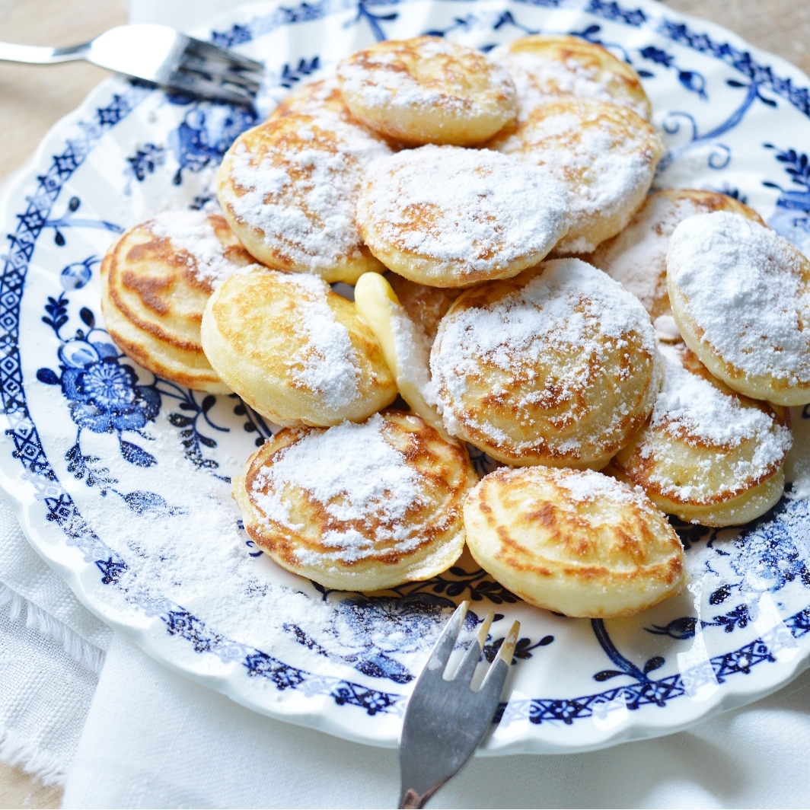

Poffertjes

Description
Poffertjes are little pancake puffs from the Netherlands formed by pouring a yeast-based batter into the cavities of a Poffertjes Pan. They are cooked on each side until golden and finished off with a few dots of butter and a sprinkling of powdered sugar.
They are particularly popular as a street food during holidays and summer festivals
Ingredients
- 7 grams active dry yeast
- 350 milliliters lukewarm whole milk
- 50 grams all-purpose flour
- 2 tablespoons granulated sugar
- Pinch salt
- 1 egg
- Butter for baking
- Butter for serving
- Powdered sugar
Preparation
- In a small bowl, sprinkle yeast over milk, then stir to combine. Allow to sit until the yeast is frothy, 5-10 minutes.
- In a large bowl, whisk together the flour, sugar, and salt. Mix in the frothy yeast with milk and egg until smooth. Cover with plastic or a towel and allow to rest until bubbly and risen, about 1 hour.
- Place poffertjes pan over medium heat and brush each of the cavities with melted butter.
- Transfer the risen batter to a piping bag or large ziplock bag with a small edge of the corner snipped off. Pipe a small amount of batter, about 1 tablespoon, into the cavities of the heated pan.
- Cook until the bottom is golden and bubbles form on the top. Flip to cook the other side. Remove to serving dish and repeat with remaining batter, greasing the cavities as needed.
- Serve immediately with butter and powdered sugar
Home
Top of page